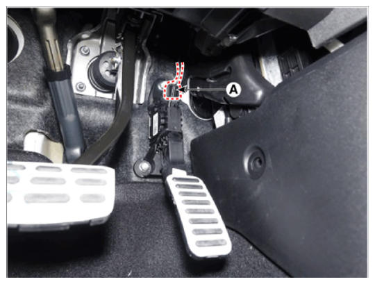
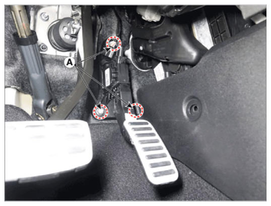

LEMON Manuals
: Even more car manuals for everyone: 1960-2025
Home
>>
Hyundai
>>
2022
>>
Elantra N Line, Standard Trans
>>
Repair and Diagnosis
>>
Engine Performance
>>
Fuel Delivery
>>
Fuel Delivery System - 1.6L (Except HEV)
>>
Accelerator Pedal
>>
Repair Procedures
>>
Removal
Repair Procedures: Removal
Turn the ignition switch OFF and disconnect the negative (-) battery cable.
Disconnect the accelerator position sensor connector (A).

Courtesy of HYUNDAI MOTOR AMERICA
Remove the installation nuts, and then remove the accelerator pedal module (A).
Tightening Torque:
16.7 - 25.5 N.m (1.7 - 2.6 kgf.m, 12.3 - 18.8 lb-ft)

Courtesy of HYUNDAI MOTOR AMERICA